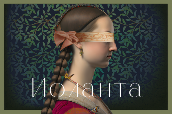

Премьера «Иоланты» в Мариинском – о личной трагедии короля-отца через
философию XIX века
12.04.2023

В апреле историческую сцену Мариинского театра украсит премьера нового
спектакля – одноактной оперы Чайковского «Иоланта». Премьерные показы
пройдут 15 (17:00), 16 (15:00 и 19:00) и 30 апреля (12:00, 16:00 и
20:00). Также постановку можно будет увидеть в мае. 15 апреля премьера
пройдет под управлением Валерия Гергиева.
«О, я напишу такую оперу, что все плакать будут», – говорил композитор
брату Модесту в 1891 году, а уже в декабре 1892-го на сцене
Мариинского театра состоялась мировая премьера сочинения. За два года
до смерти Чайковскому удалось создать светлую и жизнеутверждающую
оперу об исцелении слепой дочери короля. Лиричная музыка, трогательный
сюжет и счастливый финал делают «Иоланту» настоящей сказкой для
взрослых, которые не утратили веру в чудо. Именно от идеи философской
сказки, положенной на безмятежную музыку композитора, отталкивались
режиссер Анна Шишкина и художник Петр Окунев при подготовке спектакля
о всепобеждающей силе любви. Однако нашлось в нем место и глубокой
драме – но не Иоланты, а ее отца.
В основу версии Анны Шишкиной легла оригинальная пьеса Германа Герца
«Дочь короля Рене», сюжет которой и вдохновил Чайковского на создание
оперы. «Я всегда чувствовала, что слепота – это не ее проблема, это
скорее трагедия ее отца, – говорит режиссер. – После более близкого
знакомства с книгой мне показалось важным выдвинуть на первый план
рану короля Рене. Это его трагедия, это его слепота, это его недоверие
к жизни. Он хочет саму жизнь спрятать в темном мире».
В новом спектакле также можно найти следы философских трудов, которыми
увлекался Чайковский, и восточных теорий, модных в то время. «Движение
нашей души к свету и невозможность запереть ее внутри себя составляют
содержание, структурируют эту оперу, – отмечает режиссер. – Мне
хочется, чтобы солисты, которые исполняют партию короля Рене, не
прятались за его положением, а создавали трагичный образ. Недостаточно
просто вынести себя как персону, они должны быть открыты так, чтобы
боль семейной раны чувствовалась в каждом слове». Эту партию к
премьерным показам готовят Владимир Ванеев, Мирослав Молчанов, Глеб
Перязев, Михаил Петренко, Станислав Трофимов и др. Партию Иоланты –
Диана Казанлиева, Инара Козловская, Ольга Маслова, Наталья Павлова,
Екатерина Савинкова и др. Имена всех артистов, готовящих партии, можно
увидеть на
сайте театра.